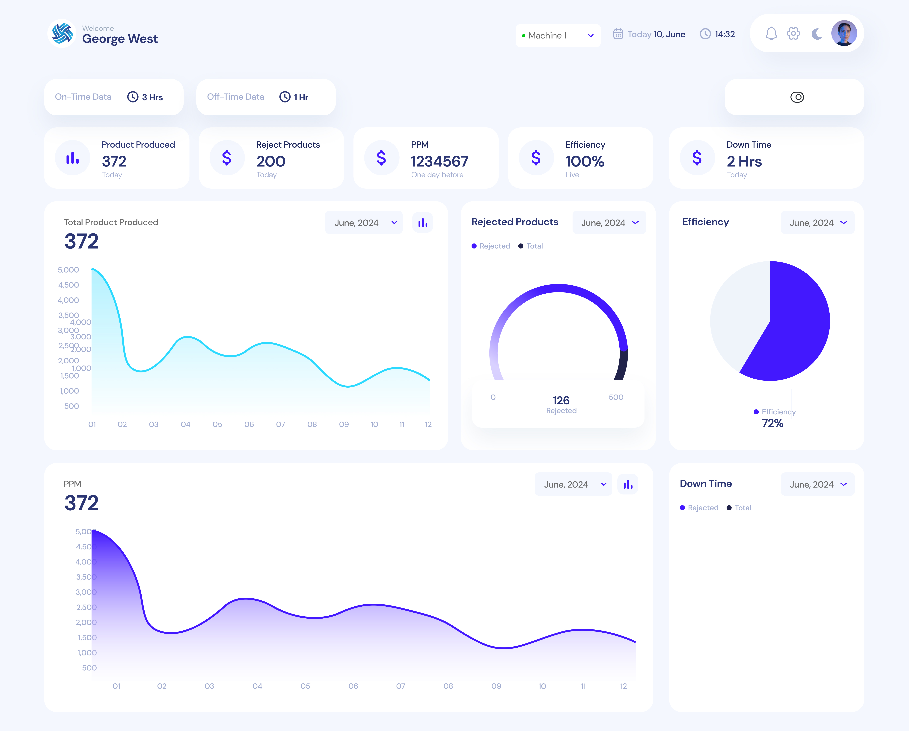
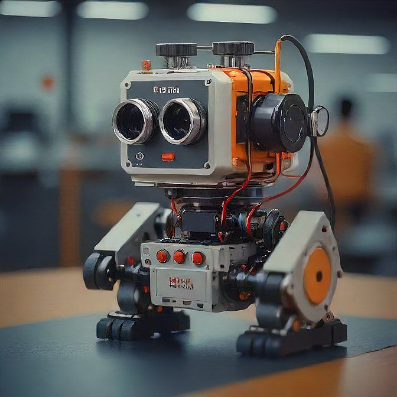

Plant Monitoring System (PMS)
Our Plant Monitoring System (PMS) is an innovative solution designed to optimize and automate the monitoring of manufacturing plants. Powered by ESP-based devices, PMS collects real-time data from machines across your facility, ensuring seamless data transmission to a centralized server. This data is then displayed on an intuitive dashboard, providing key insights into machine performance, operational status, and maintenance needs.
Key Features:
- Real-time Data Collection: PMS monitors critical parameters like temperature, humidity, vibration, and more, sending this data instantly to the server.
- Centralized Dashboard: All machine data is accessible from a single, user-friendly dashboard, allowing plant managers to make informed decisions quickly.
- Scalable & Customizable: PMS can be tailored to meet the specific needs of any manufacturing plant, regardless of size.
- Predictive Maintenance: By analyzing trends and patterns, PMS helps in predicting potential machine failures, reducing downtime.
- Remote Monitoring: Access the dashboard from anywhere, enabling continuous monitoring and control even when off-site.
- Easy Integration: PMS integrates seamlessly with existing plant infrastructure, minimizing setup time and disruptions.
Benefits:
- Enhanced Efficiency: Real-time monitoring and data-driven insights lead to better resource allocation and improved plant efficiency.
- Reduced Downtime: Early detection of issues allows for timely intervention, reducing the risk of unexpected machine failures.
- Cost Savings: By optimizing machine performance and reducing downtime, PMS contributes to significant cost savings over time.

